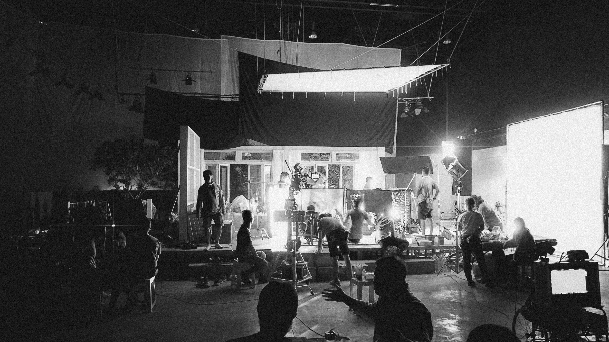
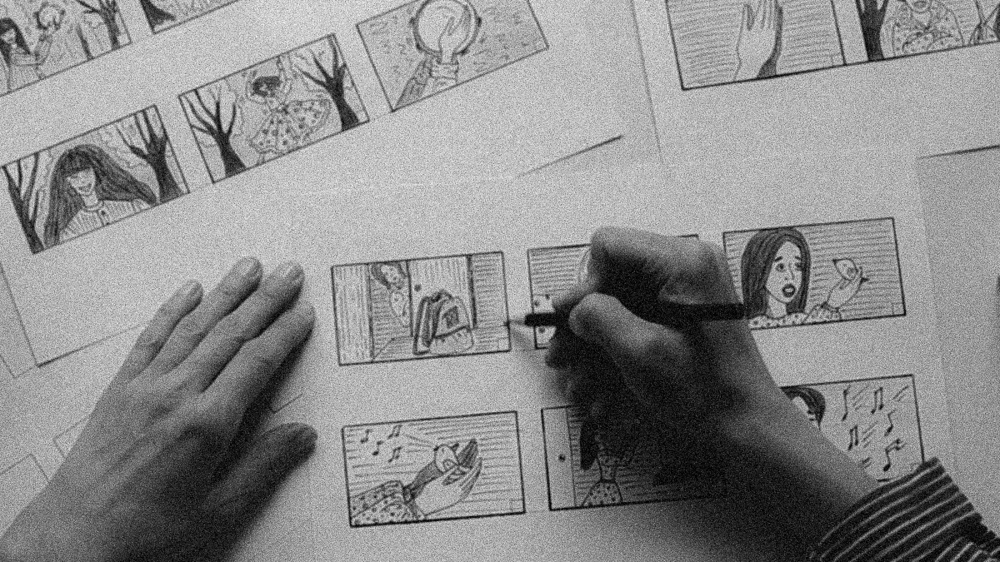
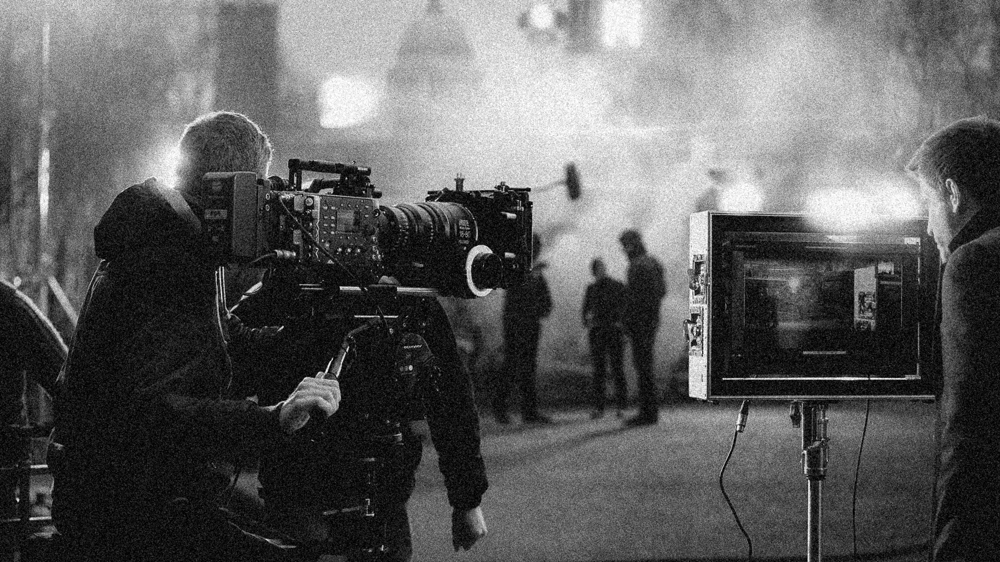
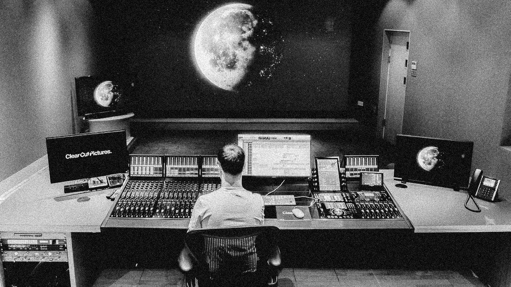

Die Filmproduktion
FILMPRODUKTIONFILMPRODUKTIONFILMPRODUKTIONFILMPRODUKTION
Die Filmproduktion durchläuft einen organischen Prozess mit vier Hauptphasen. In der Ideenentwicklung entsteht die Grundidee für den Film, sei es durch Drehbuchschreiben, Konzeptentwicklung oder basierend auf einem vorhandenen Werk. Anschließend erfolgt die Preproduction, in der alle Vorbereitungen getroffen werden, von Budgetierung über Casting bis hin zum Location-Scouting. Während der Production werden die vorbereiteten Konzepte in die Tat umgesetzt, indem Szenen gedreht und das geplante Material aufgenommen wird. Schließlich folgt die Postproduction, in der die aufgenommenen Szenen geschnitten, visuelle Effekte hinzugefügt, der Sound bearbeitet und die musikalische Untermalung erstellt werden. Jede Phase ist entscheidend für den Erfolg des Films und erfordert präzise Planung und Koordination.
Entwicklung
ENTWICKLUNGENTWICKLUNGENTWICKLUNGENTWICKLUNGENTWICKLUNG
In der Entwicklung entsteht das Gerüst für den Film. Dazu sind folgende vier Phasen notwendig:

SYNOPSIS
Eine Film-Synopsis ist eine kurze Zusammenfassung der Handlung eines Films, die einen schnellen Einblick in die zentralen Elemente der Geschichte gibt. Sie dient dazu, das Interesse von Investoren und Produzenten zu wecken und wird oft als erster Eindruck eines Filmprojekts verwendet.
EXPOSÉ
Ein Filmexposé ist eine ausführlichere schriftliche Beschreibung eines Filmprojekts als eine Synopsis. Es enthält Details zur Handlung, Charakterentwicklung, Stil und anderen kreativen Elementen.
TREATMENT
Ein Filmtreatment ist ein schriftliches Dokument, das zwischen einer Film-Synopsis und einem vollständigen Drehbuch liegt. Es bietet eine umfassendere Ausarbeitung der Geschichte und Charaktere als eine Synopsis, enthält jedoch nicht alle Details und Dialoge, die in einem Drehbuch zu finden sind.
DREHBUCH
Ein Drehbuch ist eine schriftliche Vorlage für einen Film oder eine Fernsehsendung. Es ist ein detailliertes Dokument, das die Dialoge, Handlungen, Einstellungen und alle anderen kreativen Elemente enthält, die für die Produktion eines audiovisuellen Werks benötigt werden. Das Drehbuch dient als grundlegende Anleitung für Regisseure, Schauspieler und das gesamte Filmteam während der Dreharbeiten.
Pre-Production
PREPRODUCTIONPREPRODUCTIONPREPRODUCTIONPREPRODUCTION
Preproduction ist die Phase in der Film- und Videoproduktion, die vor den eigentlichen Dreharbeiten stattfindet. In dieser Phase werden alle Vorbereitungen getroffen, um einen reibungslosen Produktionsablauf zu gewährleisten. Das umfasst das Schreiben des Drehbuchs, Casting, Standortauswahl, Budgetierung, Erstellung von Storyboards und einer Shotlist, Entwurf von Kulissen, Kostümen und Requisiten, Planung von Drehplänen sowie Absprachen mit dem technischen Team. Die Aufgaben in der Preproduction dienen dazu, die kreative Vision des Films zu konkretisieren, logistische Herausforderungen zu identifizieren und zu bewältigen, Ressourcen zu organisieren und sicherzustellen, dass alle Beteiligten auf denselben Zielen und Zeitplänen arbeiten. Die Qualität der Vorbereitung in der Preproduction hat einen direkten Einfluss auf den Erfolg der eigentlichen Dreharbeiten und darauf, wie gut die Vision des Films umgesetzt werden kann.
LOCATION-SCOUTING
Location-Scouting ist die Auswahl von Drehorten für Film- oder Fotoproduktionen, bei der Orte erkundet werden, die dem Drehbuch entsprechen und die visuelle Ästhetik des Projekts verbessern.
CASTING
Dies ist der Prozess der Auswahl von Schauspielern für bestimmte Rollen in einem Film. Der Casting-Direktor evaluiert und wählt Darsteller basierend auf deren Fähigkeiten, Aussehen und Eignung für die Charaktere. Dieser Auswahlprozess ist entscheidend, um die gewünschte Dynamik und Authentizität in einem Film zu erreichen.
SHOTLIST
Eine Shotlist ist eine detaillierte Auflistung aller geplanten Kameraeinstellungen (Shots) für einen Film oder eine Videoszene. Sie enthält Informationen über Kamerapositionen, Bewegungen, Fokussierungen und andere technische Aspekte. Die Shotlist hilft bei der effizienten Organisation und Umsetzung der Dreharbeiten.
STORYBOARD
Ein Storyboard ist eine visuelle Darstellung einer Film- oder Videosequenz in Form von Bildern oder Zeichnungen. Es dient dazu, die Reihenfolge der Szenen, Kameraeinstellungen und visuellen Elemente zu planen. Storyboards sind eine wichtige Prävisualisierungstechnik, die Regisseuren, Produzenten und Kreativteams helfen, ihre Vision zu kommunizieren und den Produktionsprozess zu strukturieren.
Production
PRODUCTIONPRODUCTIONPRODUCTIONPRODUCTIONPRODUCTION
Die Production-Phase in der Film- und Videoproduktion umfasst die eigentlichen Dreharbeiten. Nach der umfassenden Vorbereitung in der Preproduction werden während dieser Phase alle vorbereiteten Pläne in die Realität umgesetzt. Schauspieler agieren vor der Kamera, Sets werden aufgebaut, und das technische Team führt Aufnahmen durch, darunter Licht, Ton und Kameraarbeit. Präzise Koordination und Zusammenarbeit zwischen den verschiedenen Teams sind entscheidend, um die kreative Vision des Films erfolgreich umzusetzen. Die Dreharbeiten erfordern Flexibilität, da unvorhergesehene Herausforderungen auftreten können. Nach Abschluss der Production-Phase erfolgt die Überführung des aufgenommenen Materials in die Postproduction, wo der Film durch Bearbeitung, Schnitt und Tonbearbeitung seinen finalen Schliff erhält.
DREHARBEITEN
Dreharbeiten sind der zentrale Teil der Filmproduktion. Während dieser Phase wird das vorbereitete Drehbuch umgesetzt: Schauspieler agieren vor der Kamera, Kameraleute nehmen Aufnahmen auf, und das technische Team kümmert sich um Beleuchtung und Ton. Präzise Koordination und reibungslose Zusammenarbeit sind entscheidend, um die kreative Vision des Films zum Leben zu erwecken.
Post-Production
POSTPRODUCTIONPOSTPRODUCTIONPOSTPRODUCTIONPOSTPRODUCTIONPOSTPRODUCTION
Postproduction ist die abschließende Phase in der Film- und Videoproduktion. Hier wird das während der Dreharbeiten aufgenommene Material bearbeitet, geschnitten und mit visuellen und auditiven Elementen versehen. Die Bearbeitung erfolgt in spezialisierten Software-Tools. Der Schnittprozess umfasst die Auswahl und Anordnung der besten Aufnahmen, um eine kohärente Erzählung zu schaffen. Visual Effects, Animation und Farbkorrekturen werden hinzugefügt, um die visuelle Qualität zu optimieren. Der Ton wird bearbeitet, inklusive Dialoge, Hintergrundmusik und Soundeffekte. Die Postproduction ist entscheidend für die Verfeinerung und Perfektionierung des Films, um die gewünschte Wirkung zu erzielen. Nach Abschluss dieser Phase erfolgt die Premiere des fertigen Films für das Publikum.
SCHNITT
Schnitt ist der Prozess in der Postproduction, in dem das aufgenommene Filmmaterial ausgewählt, arrangiert und bearbeitet wird. Dies umfasst den Zusammenschnitt von Szenen, die Anpassung der Bild- und Tonqualität, sowie die Integration von visuellen Effekten. Der Schnitt formt den endgültigen Film und beeinflusst stark dessen Struktur und Erzählfluss.
VERTONUNG
Vertonung ist der Prozess in der Postproduction, bei dem der Ton für einen Film erstellt oder bearbeitet wird. Das umfasst Dialoge, Hintergrundmusik, Soundeffekte und Atmosphäre. Die Vertonung trägt wesentlich zur Stimmung und Immersion des Films bei und erfolgt in spezialisierten Studios durch Toningenieure.
GRADING
Grading ist der Prozess der Farbkorrektur in der Postproduction eines Films. Hier werden Farben, Kontraste und Belichtung angepasst, um die visuelle Ästhetik zu verfeinern und eine konsistente Bildqualität zu erreichen. Das Grading trägt maßgeblich zur visuellen Atmosphäre und Wirkung des Films bei.